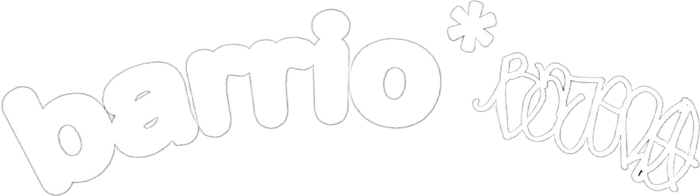

Acerca de nosotros
En 2022 nació Barrio Bajero con un propósito claro: compartir la pasión por la moda vintage y vestir a la gente
con un estilo único. Nuestro objetivo va más allá de vender ropa de segunda mano; buscamos inspirar la expresión
personal y la individualidad en cada cliente. En nuestro espacio, cada prenda cuenta una historia y representa
la esencia de su portador. Bienvenido a Barrio Bajero, donde la moda se encuentra con la autenticidad, y el
estilo es sinónimo de identidad.
